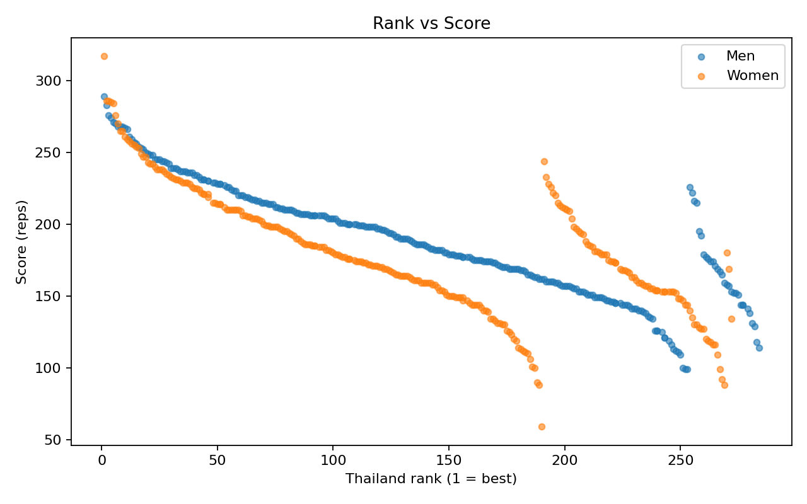

Overview
The dataset supports leaderboard-level analysis: rank, reps, gender, and division. It does not include athlete names, affiliates, geography, or age in this version.
Performance Distribution
These charts show where most athletes cluster, how score spread differs by group, and how performance changes across the leaderboard.
Score Distribution by Gender
Useful for seeing the overall shape of the performance field and where most scores are concentrated.

Score Spread by Gender and Division
Box plots help compare median performance and variability between divisions and genders.

Competitiveness
These views are designed for benchmarking: how steep the leaderboard is, and what score levels are needed to sit in stronger percentile bands.
Percentile Curve
Best for understanding score benchmarks such as top 10%, top 25%, and median level.

Rank vs Score
Shows how quickly scores drop off as rank increases, highlighting top-end compression or separation.
Top Leaderboard Snapshot
A quick visual summary of top-performing entries in this dataset export.
Top 10 Snapshot
A presentation-friendly leaderboard view for quick sharing and social storytelling.

Key Takeaways
These are descriptive findings from the available leaderboard structure only. They should not be treated as causal conclusions.